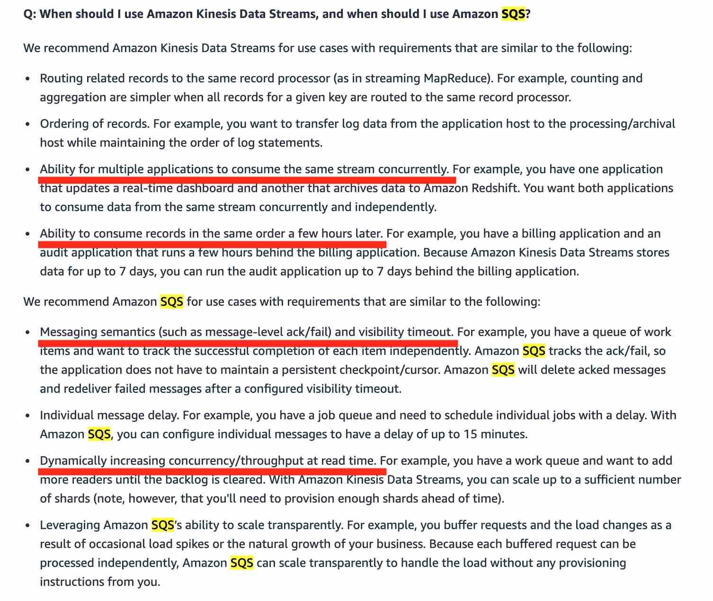

Amazon Kinesis
It makes it easy to collect, process, and analyze real-time, streaming data so you can get timely insights and react quickly to new information.
FAN out pattern
KDS can continuously capture gigabytes of data per second from hundreds of thousands of sources such as website clickstreams, database event streams, financial transactions, social media feeds, IT logs, and location-tracking events. By default, the 2MB/second/shard output is shared between all of the applications consuming data from the stream.
You should use enhanced fan-out if you have multiple consumers retrieving data from a stream in parallel. With enhanced fan-out developers can register stream consumers to use enhanced fan-out and receive their own 2MB/second pipe of read throughput per shard, and this throughput automatically scales with the number of shards in a stream.
Kinesis Data Firehose
Easiest way to reliably load streaming data into data lakes, data stores, and analytics tools. It is a fully managed service that automatically scales to match the throughput of your data and requires no ongoing administration. It can also batch, compress, transform, and encrypt the data before loading it, minimizing the amount of storage used at the destination and increasing security. Kinesis Data Firehose can only write to S3,Redshift, Opensearch, API Gateway or Splunk.
Kinesis Data Analytics
Easiest way to analyze streaming data in real-time. Kinesis Data Analytics enables you to easily and quickly build queries and sophisticated streaming applications in three simple steps: setup your streaming data sources, write your queries or streaming applications, and set up your destination for processed data. Kinesis Data Analytics cannot directly ingest data from the source as it ingests data either from Kinesis Data Streams or Kinesis Data Firehose
You can use Kinesis Data Analytics to transform and analyze streaming data in real-time with Apache Flink. Kinesis Data Analytics enables you to quickly build end-to-end stream processing applications for log analytics, clickstream analytics, Internet of Things (IoT), ad tech, gaming, etc. The four most common use cases are streaming extract-transform-load (ETL), continuous metric generation, responsive real-time analytics, and interactive querying of data streams. Kinesis Data Analytics for Apache Flink applications provides your application 50 GB of running application storage per Kinesis Processing Unit (KPU).
AWS recommends Amazon Kinesis Data Streams for use cases with requirements that are similar to the following: 1. Routing related records to the same record processor (as in streaming MapReduce). For example, counting and aggregation are simpler when all records for a given key are routed to the same record processor. 2. Ordering of records. For example, you want to transfer log data from the application host to the processing/archival host while maintaining the order of log statements. 3. Ability for multiple applications to consume the same stream concurrently. For example, you have one application that updates a real-time dashboard and another that archives data to Amazon Redshift. You want both applications to consume data from the same stream concurrently and independently. 4. Ability to consume records in the same order a few hours later. For example, you have a billing application and an audit application that runs a few hours behind the billing application. Because Amazon Kinesis Data Streams stores data for up to 365 days, you can run the audit application up to 365 days behind the billing application.
Capture data in Amazon Kinesis Data Streams. Use Kinesis Data Analytics to query and analyze this streaming data in real-time - For Kinesis Data Streams, you have to manually allocate the shards for scaling the data ingestion process. Kinesis Data Streams (KDS) and Kinesis Data Analytics are for real-time processing of data and cannot provide long-term storage of data unlike a database or a data warehouse. So, this option is not right for the current use case
When a Kinesis data stream is configured as the source of a Firehose delivery stream, Firehose’s PutRecord and PutRecordBatch operations are disabled and Kinesis Agent cannot write to Firehose delivery stream directly. Data needs to be added to the Kinesis data stream through the Kinesis Data Streams PutRecord and PutRecords operations instead.
If the IAM role that you create for the Lambda function is in the same AWS account as the bucket, then you don't need to grant Amazon S3 permissions on both the IAM role and the bucket policy. Instead, you can grant the permissions on the IAM role and then verify that the bucket policy doesn't explicitly deny access to the Lambda function role. If the IAM role and the bucket are in different accounts, then you need to grant Amazon S3 permissions on both the IAM role and the bucket policy.